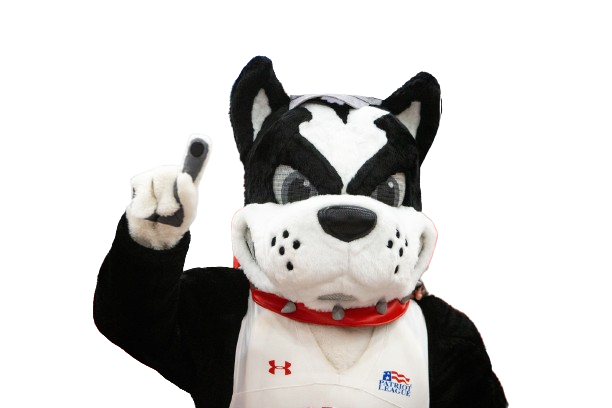

Heya! I'm Rhett 🐾
Your Terrier research scout—let's turn AI trends into stories, tail wags, and action steps.
Give me something to sniff out:
Your Terrier research scout—let's turn AI trends into stories, tail wags, and action steps.
Give me something to sniff out: